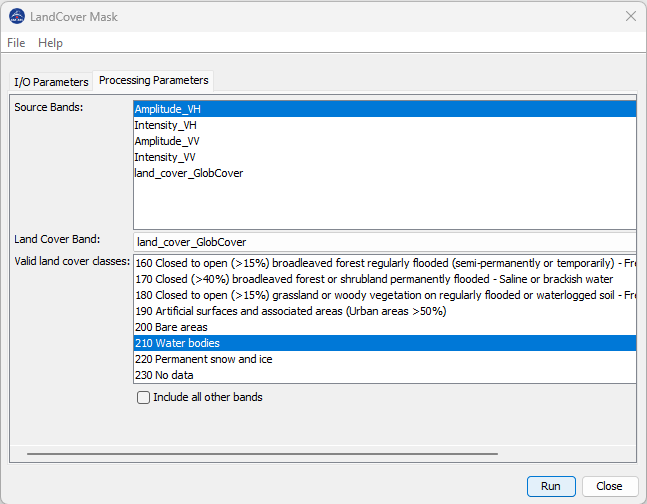

| Land Cover Mask | |
The Land Cover Mask operator uses a land cover band to mask an image based on the classes in the land cover.
A product must first have a land cover band added to it using the AddLandCover operator. The Land Cover Mask operator will then apply a mask including pixels within the selected land cover classes and nodata value for pixels within non-selected classes.
The following parameters are used by the operator:
